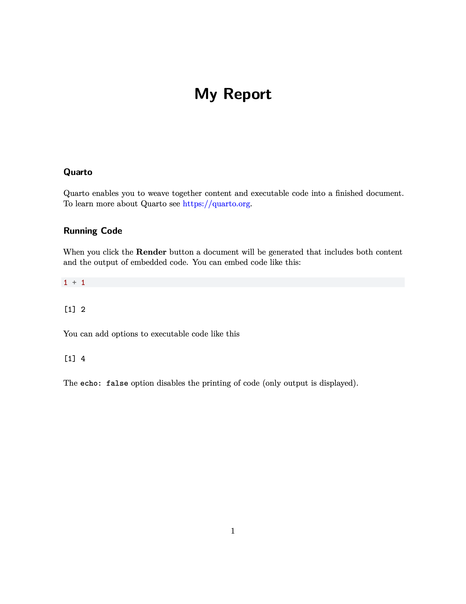
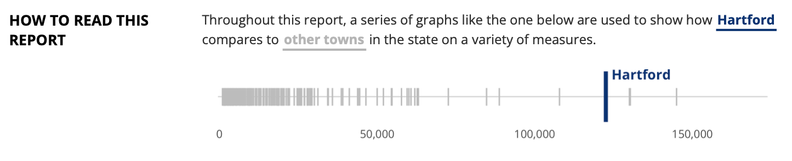
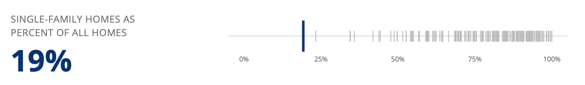
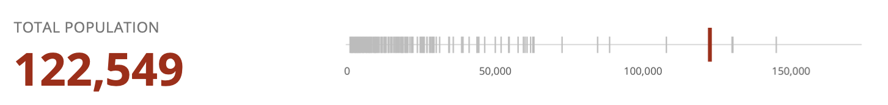
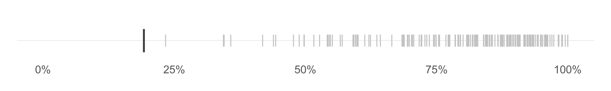
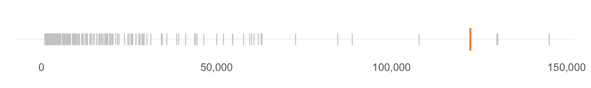

Report Design in R: Small Tweaks that Make a Big Difference
Some slide that shows transition of me moving to R
Make ugly reports

Work with a designer
Make beautiful reports in R
Does Design Matter?
Aesthetic Usability Effect
Users see aesthetically pleasing designs as more intuitive
Good Design Builds Trust
Putting effort into your charts shows respect for your audience
Good Design Builds Trust
Putting effort into your charts shows respect for your audience, which means that they in turn are going to respect you and your findings.
But I’m Not a Designer!
Good Design is Just a Few Small Tweaks
PDFs (sorry)
typst
typst overview
- Faster than LaTeX
- Easier (?) to learn
Overall template
- Set fonts
- Define headings
- Header and footer
How to pass variables from YAML to typst
. . .
TODO: Get incremental reveal working
TODO: Get verbatim code chunk working
typst-show.typ
#show: typst-report.with(
$if(title)$
title: "$title$",
$endif$
$if(subtitle)$
subtitle: "$subtitle$",
$endif$Color
- Apply brand colors to template for sections
Fonts
- Apply brand fonts to template
Alignment
Use patchwork
Use Quarto columns
Use typst columns
Make a ggplot theme
ggplot theme
Use Functions to Make Your Plots Consistent
Comparison Plots



# A tibble: 169 × 2
location value
<fct> <dbl>
1 Andover 0.897
2 Ansonia 0.548
3 Ashford 0.850
4 Avon 0.844
5 Barkhamsted 0.956
6 Beacon Falls 0.717
7 Berlin 0.807
8 Bethany 0.958
9 Bethel 0.746
10 Bethlehem 0.944
11 Bloomfield 0.704
12 Bolton 0.966
13 Bozrah 0.920
14 Branford 0.684
15 Bridgeport 0.345
16 Bridgewater 0.982
17 Bristol 0.591
18 Brookfield 0.809
19 Brooklyn 0.812
20 Burlington 0.957
21 Canaan 0.952
22 Canterbury 0.925
23 Canton 0.792
24 Chaplin 0.901
25 Cheshire 0.823
26 Chester 0.786
27 Clinton 0.811
28 Colchester 0.786
29 Colebrook 0.932
30 Columbia 0.855
31 Cornwall 0.961
32 Coventry 0.933
33 Cromwell 0.749
34 Danbury 0.543
35 Darien 0.909
36 Deep River 0.721
37 Derby 0.570
38 Durham 0.970
39 East Granby 0.773
40 East Haddam 0.909
41 East Hampton 0.872
42 East Hartford 0.599
43 East Haven 0.722
44 East Lyme 0.814
45 East Windsor 0.643
46 Eastford 0.879
47 Easton 1
48 Ellington 0.707
49 Enfield 0.775
50 Essex 0.791
51 Fairfield 0.852
52 Farmington 0.744
53 Franklin 0.908
54 Glastonbury 0.847
55 Goshen 0.973
56 Granby 0.934
57 Greenwich 0.688
58 Griswold 0.665
59 Groton 0.542
60 Guilford 0.889
61 Haddam 0.928
62 Hamden 0.601
63 Hampton 0.884
64 Hartford 0.192
65 Hartland 0.962
66 Harwinton 0.989
67 Hebron 0.904
68 Kent 0.861
69 Killingly 0.624
70 Killingworth 0.876
71 Lebanon 0.950
72 Ledyard 0.896
73 Lisbon 0.890
74 Litchfield 0.843
75 Lyme 0.989
76 Madison 0.930
77 Manchester 0.551
78 Mansfield 0.567
79 Marlborough 0.923
80 Meriden 0.546
81 Middlebury 0.867
82 Middlefield 0.906
83 Middletown 0.478
84 Milford 0.736
85 Monroe 0.892
86 Montville 0.825
87 Morris 0.917
88 Naugatuck 0.636
89 New Britain 0.344
90 New Canaan 0.822
91 New Fairfield 0.983
92 New Hartford 0.919
93 New Haven 0.233
94 New London 0.358
95 New Milford 0.775
96 Newington 0.749
97 Newtown 0.930
98 Norfolk 0.840
99 North Branford 0.818
100 North Canaan 0.694
101 North Haven 0.843
102 North Stonington 0.960
103 Norwalk 0.527
104 Norwich 0.498
105 Old Lyme 0.885
106 Old Saybrook 0.873
107 Orange 0.924
108 Oxford 0.958
109 Plainfield 0.728
110 Plainville 0.613
111 Plymouth 0.754
112 Pomfret 0.856
113 Portland 0.840
114 Preston 0.948
115 Prospect 0.896
116 Putnam 0.516
117 Redding 0.867
118 Ridgefield 0.820
119 Rocky Hill 0.592
120 Roxbury 0.956
121 Salem 0.905
122 Salisbury 0.906
123 Scotland 0.917
124 Seymour 0.687
125 Sharon 0.917
126 Shelton 0.772
127 Sherman 0.990
128 Simsbury 0.791
129 Somers 0.935
130 South Windsor 0.824
131 Southbury 0.749
132 Southington 0.795
133 Sprague 0.696
134 Stafford 0.768
135 Stamford 0.443
136 Sterling 0.899
137 Stonington 0.732
138 Stratford 0.756
139 Suffield 0.876
140 Thomaston 0.698
141 Thompson 0.827
142 Tolland 0.942
143 Torrington 0.596
144 Trumbull 0.892
145 Union 1
146 Vernon 0.488
147 Voluntown 0.846
148 Wallingford 0.686
149 Warren 0.990
150 Washington 0.891
151 Waterbury 0.419
152 Waterford 0.875
153 Watertown 0.796
154 West Hartford 0.702
155 West Haven 0.497
156 Westbrook 0.886
157 Weston 0.995
158 Westport 0.916
159 Wethersfield 0.801
160 Willington 0.621
161 Wilton 0.885
162 Winchester 0.596
163 Windham 0.439
164 Windsor 0.847
165 Windsor Locks 0.786
166 Wolcott 0.938
167 Woodbridge 0.927
168 Woodbury 0.828
169 Woodstock 0.895

comparison_plot <- function(df, highlight_town, value_type) {
plot <-
df |>
ggplot() +
...
if (value_type == "percent") {
final_plot <- plot +
scale_x_continuous(
labels = percent_format(accuracy = 1)
)
}
if (value_type == "number") {
final_plot <- plot +
scale_x_continuous(
labels = comma_format(accuracy = 1)
)
}
}comparison_plot <- function(df, highlight_town, value_type) {
plot <-
df |>
ggplot() +
...
if (value_type == "percent") {
final_plot <- plot +
scale_x_continuous(
labels = percent_format(accuracy = 1)
)
}
if (value_type == "number") {
final_plot <- plot +
scale_x_continuous(
labels = comma_format(accuracy = 1)
)
}
final_plot
}
# A tibble: 169 × 2
location value
<fct> <dbl>
1 Andover 3178
2 Ansonia 18709
3 Ashford 4233
4 Avon 18302
5 Barkhamsted 3626
6 Beacon Falls 6185
7 Berlin 20460
8 Bethany 5492
9 Bethel 19822
10 Bethlehem 3413
11 Bloomfield 21128
12 Bolton 4902
13 Bozrah 2614
14 Branford 27924
15 Bridgeport 145014
16 Bridgewater 1782
17 Bristol 60039
18 Brookfield 17010
19 Brooklyn 8254
20 Burlington 9678
21 Canaan 1178
22 Canterbury 5080
23 Canton 10274
24 Chaplin 2514
25 Cheshire 29017
26 Chester 4219
27 Clinton 12926
28 Colchester 15885
29 Colebrook 1362
30 Columbia 5402
31 Cornwall 1344
32 Coventry 12434
33 Cromwell 13865
34 Danbury 84650
35 Darien 21752
36 Deep River 4466
37 Derby 12420
38 Durham 7196
39 East Granby 5370
40 East Haddam 8989
41 East Hampton 12819
42 East Hartford 50036
43 East Haven 28645
44 East Lyme 18618
45 East Windsor 11502
46 Eastford 1647
47 Easton 7510
48 Ellington 16348
49 Enfield 43952
50 Essex 6611
51 Fairfield 61954
52 Farmington 25498
53 Franklin 1837
54 Glastonbury 34527
55 Goshen 2877
56 Granby 11410
57 Greenwich 62714
58 Griswold 11627
59 Groton 38634
60 Guilford 22164
61 Haddam 8222
62 Hamden 60740
63 Hampton 1803
64 Hartford 122549
65 Hartland 1883
66 Harwinton 5428
67 Hebron 9506
68 Kent 2789
69 Killingly 17267
70 Killingworth 6390
71 Lebanon 7175
72 Ledyard 14730
73 Lisbon 4246
74 Litchfield 8126
75 Lyme 2425
76 Madison 18065
77 Manchester 57701
78 Mansfield 25682
79 Marlborough 6351
80 Meriden 59512
81 Middlebury 7771
82 Middlefield 4375
83 Middletown 46406
84 Milford 54503
85 Monroe 19492
86 Montville 18747
87 Morris 2109
88 Naugatuck 31201
89 New Britain 72543
90 New Canaan 20249
91 New Fairfield 13924
92 New Hartford 6678
93 New Haven 130381
94 New London 27001
95 New Milford 26893
96 Newington 30114
97 Newtown 27824
98 Norfolk 1611
99 North Branford 14147
100 North Canaan 3269
101 North Haven 23665
102 North Stonington 5239
103 Norwalk 88755
104 Norwich 39112
105 Old Lyme 7371
106 Old Saybrook 10072
107 Orange 13928
108 Oxford 13141
109 Plainfield 15129
110 Plainville 17605
111 Plymouth 11646
112 Pomfret 4178
113 Portland 9301
114 Preston 4644
115 Prospect 9710
116 Putnam 9367
117 Redding 9123
118 Ridgefield 25012
119 Rocky Hill 20147
120 Roxbury 2118
121 Salem 4096
122 Salisbury 3604
123 Scotland 1603
124 Seymour 16469
125 Sharon 2706
126 Shelton 41162
127 Sherman 3634
128 Simsbury 25025
129 Somers 10853
130 South Windsor 25962
131 Southbury 19619
132 Southington 43753
133 Sprague 2887
134 Stafford 11878
135 Stamford 130057
136 Sterling 3759
137 Stonington 18539
138 Stratford 51982
139 Suffield 15730
140 Thomaston 7558
141 Thompson 9361
142 Tolland 14685
143 Torrington 34259
144 Trumbull 35808
145 Union 903
146 Vernon 29300
147 Voluntown 2530
148 Wallingford 44428
149 Warren 1459
150 Washington 3435
151 Waterbury 107841
152 Waterford 18911
153 Watertown 21668
154 West Hartford 63023
155 West Haven 54666
156 Westbrook 6885
157 Weston 10278
158 Westport 28175
159 Wethersfield 26068
160 Willington 5876
161 Wilton 18405
162 Winchester 10676
163 Windham 24618
164 Windsor 28791
165 Windsor Locks 12732
166 Wolcott 16611
167 Woodbridge 8779
168 Woodbury 9529
169 Woodstock 7844
Big Numbers
Use Brand Colors

Use colors in plots
Use same colors in plots and tables and in text


Make palette with monochromeR package
Use colors consistently (e.g. red = town, pink = county, gray = state; https://show.rfor.us/XB40stB9)
- Make
scale_color_psc()starting withscale_color_manual()
https://show.rfor.us/ycg8TXjG
Text
Choose one font or maybe two fonts and stick with them
Use fonts in theme
Use
set_geom_defaults()to make allgeom_text()elements use same font
My favorite fonts
Serif
- Inter
- Roboto
- Public Sans
- Geist Sans
- Overpass
- Instrument Sans
- Inclusive Sans
Sans Serif
- Instrument Serif
Monospace
Geist Mono
IBM Plex Mono
Ubuntu Mono
Overpass Mono
Roboto Mono
Use fonts that have whole families
Use fonts in plots and tables
Maybe use monospaced font in tables
Additional Design Elements
Big numbers
TODO: figure out whether to do this in ggplot or use HTML/CSS/typst or remove this?
Tables
Make table function
Show it without colors, then with colors
Show it without brand font, then with brand font